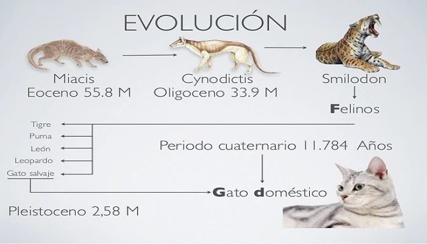

Índice
Origen y Evolución
Son muchas las cualidades de los gatos. Inteligentes, elegantes o ágiles son solo algunos de los calificativos que podemos utilizar para referirnos a este felino que se ha adaptado a la convivencia con los humanos y a vivir tanto en el interior de sus hogares como en las ciudades, formando lo que se denominan colonias. Los gatos se acercaron a las personas hace unos 10 000 años, atraídos por la abundancia de roedores que rondaban los asentamientos humanos, que se dieron cuenta de la valía del gato para controlar estas plagas. Pero, además, en civilizaciones como la egipcia los gatos fueron animales sagrados, dioses y tan respetables como para ser enterrados con honores.
Con el paso de los años, la relación entre gatos y humanos ha ido experimentando distintos altibajos, pero los felinos siempre han logrado adaptarse a cada situación para sobrevivir. Hoy en día, forman parte de los animales de compañía favoritos aunque, lamentablemente, todavía son muchas las personas que deciden abandonarlos a su suerte.
En cuanto al origen del gato como especie, son varias la teorías que existen a su alrededor, por lo que aun se debate cómo surgió y dónde. Mamíferos, carnívoros y con celos estacionales, a continuación profundizamos en las características de los gatos.
Taxonomía
Comenzamos este repaso de las características del gato por su taxonomía, que es la clasificación científica que sitúa a esta especie dentro del reino animal según sus parámetros más destacados. Es la siguiente:
- Reino: Animalia
- Subreino: Eumetazoa
- Subfilo: Vertebrata
- Clase: Mammalia
- Subclase: Theria
- Infraclase: Placentalia
- Orden: Carnivora
- Suborden: Felifornia
- Familia: Felidae
- Subfamilia: Felinae
- Género: Felis
- Especie: Felis silvestris
- Subespecie: Felis silvesstris catus